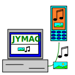

JYMAG - Jig Your Music And Graphics 
JYMAG jest programem do komunikacji z telefonami komórkowymi.
Strona domowa projektu jest dostêpna na jymag.sourceforge.io.
Program umo¿liwia pobieranie i wysy³anie multimediów
i innych obiektów z i do telefonów lub urz±dzeñ opartych na komendach AT, jak
telefon komórkowy marki Sagem (przetestowane na
Linuksie z telefonem "Sagem MY X5-2") oraz wykonywanie innych dzia³añ.
JYMAG mo¿e te¿ byæ u¿ywany z innymi telefonami i urz±dzeniami (modemy) lub s³u¿yæ jako terminal
szeregowy ogólnego przeznaczenia lub jako biblioteka Javy dla programistów.
Celem programu JYMAG jest bycie Wolnym (w sensie wolno¶ci) zamiennikiem
programu 'My Pictures and Sounds' dla
telefonów komórkowych Sagem pod systemem Linux® i nie tylko - powinien dzia³aæ na
ka¿dym systemie, gdzie da siê zainstalowaæ
Java® i
RxTx z jednej ze stron:
Cechy programu:
- dzia³a z telefonem Sagem myX5-2 (prawdopodobnie inne telefony te¿ dzia³aj±). Sprawdzone pod
systemem Linux z kablem USB Forever zawieraj±cym chip Prolific PL-2303.
- umie pobieraæ z telefonu:
- listy obrazków, dzwonków, wpisów w ksi±¿ce adresowej, zadañ do zrobienia, zdarzeñ,
animacji/wideo, budzików i wiadomo¶ci SMS
- obrazków w formatach JPG (zarówno Sagem, jak i nie-Sagem), BMP, GIF, PNG i WBMP,
niesprawdzone: TIFF, PICT, EPS, PS, SVG, SVG+GZIP, SVG+ZIP, WMF, CGM, PMB
- dzwonków w formatach MIDI, AMR i WAV, niesprawdzone: AIFF, IMY, AAC, MP3
- wpisów w ksi±¿ce adresowej (vCard)
- zadañ do zrobienia
- zdarzeñ (przypomnieñ, ...)
- animacje/wideo w formatach GIF i MNG, niesprawdzone: WMV, MP4, MPEG
- wiele plików (tego samego typu) jednym klikniêciem
- umie wys³aæ do telefonu lub aktualizowaæ:
- obrazki w formatach JPG, BMP, GIF, PNG i WBMP, niesprawdzone: EMS_GR, TIFF, PICT, AI,
EPS, PS
- dzwonki w formatach MIDI, WAV i AMR,
niesprawdzone: IMY, ASG1, ASG2, MP3, MFI, AAC, AWB
- wpisy w ksi±¿ce adresowej (vCard)
- zadania do zrobienia
- zdarzenia (przypomnienia, ...)
- animacje/wideo w formatach GIF i MNG, niesprawdzone: EMS_AN, MJPG, AVI, MP4, MPEG,
3GP, 3GP2, SG1, SG2, SSA
- pliki Javy: niesprawdzone: JAR, JAD, JAM
- budziki
- wiadomo¶ci SMS
- umie z telefonu skasowaæ:
obrazki, dzwonki, wpisy w ksi±¿ce adresowej,
zadania do zrobienia, zdarzenia, animacje/wideo, budziki i wiadomo¶ci SMS
- umie wykrêcaæ numery
- jest napisany w Javie, wiêc jest przeno¶ny - dzia³a pod systemem Linux i prawdopodobnie pod Windows,
Solaris, ... gdziekolwiek da siê zainstalowaæ Java i RxTx
- posiada graficzny interfejs u¿ytkownika (GUI)
- umie wykryæ, do którego portu pod³±czony jest telefon (tak w³a¶ciwie wykryje cokolwiek, co
odpowiada OK na komendê AT, ³±cznie z modemami)
- umie wykryæ typ telefonu, wersjê jego oprogramowania (po skanowaniu portów), numer IMEI
i number telefonu abonenta
- pozwala ustawiæ ka¿d± cechê portu komunikacyjnego (bity danych, bity stopu, kontrola
przep³ywu, szybko¶æ, sprawdzanie parzysto¶ci)
- automatycznie wykrywa typ ¶ci±ganego pliku
- automatyczne ponowne ³±czenie, gdy przekroczono czas oczekiwania
- mo¿e byæ u¿ywany nieinteraktywnie, poprzez liniê poleceñ (to dalej wymaga
RxTx), uruchom program z opcj±
--help, by poznaæ wszystkie obs³ugiwane opcje linii poleceñ
- pozwala na rêczne wysy³anie komend
- pozwala na ³atwe t³umaczenie na inne jêzyki
- pozwala zapisywaæ i odczytywaæ bie¿±c± konfiguracjê (ustawienia portu i okna)
- pozwala na odczytanie mo¿liwo¶ci telefonu (typów przyjmowanych plików)
- jest wydany na zasadach licencji GNU General Public License (GPL),
w wersji 3 "lub pó¼niejszej"
- mo¿e s³u¿yæ jako terminal szeregowy ogólnego przeznaczenia
- pokazuje moc sygna³u
Okna programu:
Dodatkowe strony:
Kontakt
Mój adres: bogdro AT users . sourceforge . net (polski akceptowany, napisz '[SOFT]' w tytule).
Informacje prawne
Oracle®, Java, i MySQL s± zarejestrowanymi znakami handlowymi Oracle i/lub jego
wspólników. Inne nazwy mog± byæ znakami handlowymi odpowiednich w³a¶cicieli.
LINUX® jest zarejestrowanym znakiem handlowym Linusa Torvaldsa.
"Sagem" mo¿e byæ znakiem handlowym lub zarejestrowanym znakiem handlowym firmy
Sagem, jej nabywców, firm potomnych lub nastêpców prawnych.
Wszystkie inne znaki handlowe, logo i nazwy na tej stronie i wszystkich podstronach s±
w³asno¶ci± odpowiednich w³a¶cicieli i s± tu podane tylko jako przyk³ad.